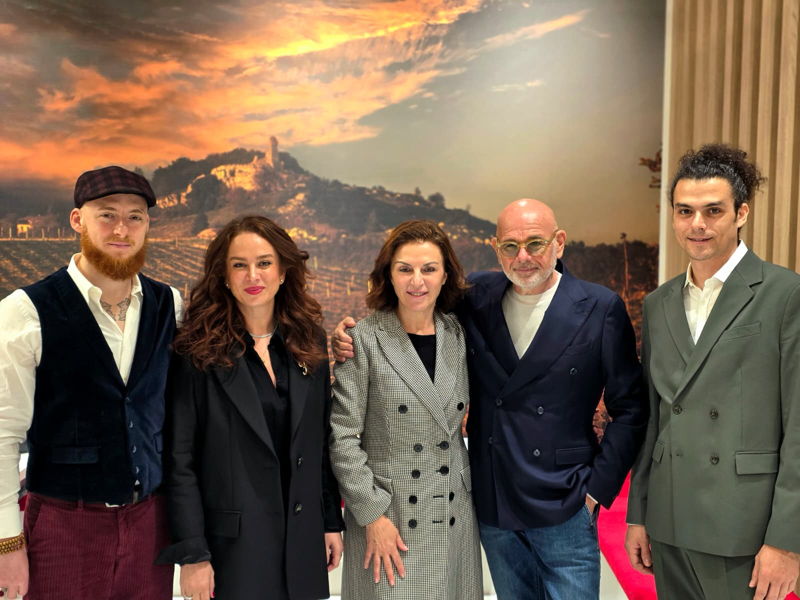
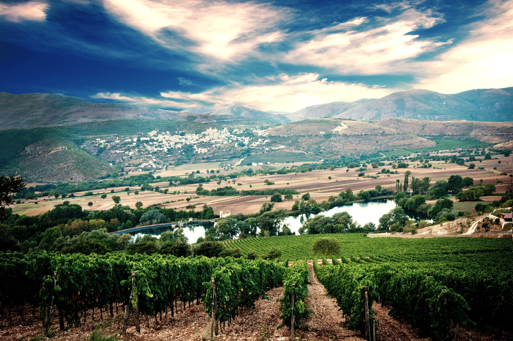

Abruzzo, Italy
Pasetti
Five generations on the slopes of the Gran Sasso.

Family estates and independent farmers whose wines carry a clear sense of place, practice, and personality.
We work with producers who see themselves as growers, farmers, and stewards of place. Their wines are shaped by soil, climate, altitude, farming choices, and cultural history.

Five generations on the slopes of the Gran Sasso.

Organic family farming on volcanic and limestone soils.

Generations of careful work in the vineyard and chai.
We want to know the soils, slopes, climate, and decisions behind each wine.
Organic, sustainable, or simply rigorous, the method must be felt in the bottle.
Every producer earns a place because the wine works in the real world of Alberta lists.